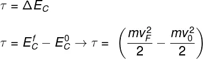

Teorema do trabalho e Energia Cinética
O teorema do trabalho e energia cinética afirma que o trabalho realizado sobre um corpo ou partícula é equivalente à variação de sua energia cinética. Esse teorema pode ser descrito por meio da seguinte equação:

- T = Trabalho (J)
- ΔEC = Variação da Energia Cinética (J)
- ECF e EC0 = Energia Cinética final e inicial (J)
- M = Massa (KG)
- vF e v0 = Velocidade final e inicial (m/s)
O trabalho é a transferência de energia, por isso, quando estamos empurrando um carrinho de compras, por exemplo, transferimos uma parte de nossa energia para ele. Essa energia transferida transforma-se em movimento, uma vez que o carrinho adquire velocidade.